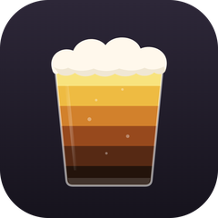

Понад 100 стилів
Лагери, пілзнери, боки, пшеничні, пейл-ейли, IPA, біттери, портери, стаути, кислі, дикі та спеціальні.

Енциклопедія стилів пива
Пілзнер чи гелес? Портер чи стаут? Понад 100 стилів пива: колір, міцність, гіркота і чим кожен відрізняється від сусідів. Кишенькова енциклопедія і для новачків, і для ентузіастів.
Кожен стиль у своєму справжньому кольорі: келих на картці тонований за SRM стилю.
Кожна картка стилю має два шари: короткий зрозумілий опис зверху і технічні дані нижче.
Лагери, пілзнери, боки, пшеничні, пейл-ейли, IPA, біттери, портери, стаути, кислі, дикі та спеціальні.
ABV, IBU і SRM на спільній шкалі, щоб порівнювати стилі з першого погляду.
Головні відмінності від схожих стилів і перехід до них одним дотиком.
Простими словами, плюс ідеї гастрономічних поєднань для кожного стилю.
Пиво українських і європейських броварень, а ще локальний стиль поза класичними настановами: український золотий ейл.
OG, FG, °P, тип бродіння, історія та інгредієнти в технічному блоці, що розгортається.
Шукайте за назвою стилю українською або англійською. Помилки й діакритика не завадять.
Усе зберігається на пристрої. Без реєстрації та без інтернету, хоч на пивному фестивалі, хоч у Карпатах.
Чистий нативний дизайн iOS, що підлаштовується під системну тему, з підтримкою Dynamic Type і VoiceOver.
Усі функції безкоштовні. Якщо Пивогляд вам корисний, можете пригостити автора келихом, пінтою чи цілою бочкою. Підтримка нічого не відкриває.
Про дані. Цифрові показники стилів (ABV, IBU, SRM, густина) засновані на відкритих настановах BJCP Beer Style Guidelines 2021. Усі описи написано самостійно для Пивогляду. Застосунок не пов'язаний з BJCP і не схвалений ним.